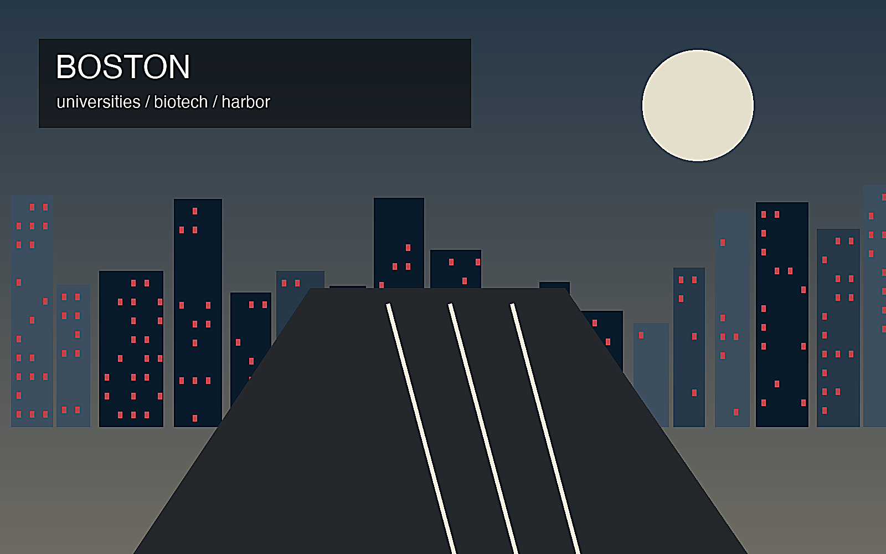

地政学
ニューイングランドの歴史的港町で、ハーバード、MIT、医療機関、バイオ企業が都市圏を特徴づける。

🇺🇸 アメリカ合衆国 / 北米 / World City Atlas
大学と医療が都市経済を牽引する港町。世界都市として、経済規模だけでなく、地理、産業、宗教文化、暮らし、観光を分けて読みます。
都市の骨格
ニューイングランドの歴史的港町で、ハーバード、MIT、医療機関、バイオ企業が都市圏を特徴づける。

ニューイングランドの歴史的港町で、ハーバード、MIT、医療機関、バイオ企業が都市圏を特徴づける。
大学研究、医療、バイオテック、金融、教育、観光が高付加価値の雇用を作る。
プロテスタント、カトリック、ユダヤ教、移民宗教があり、アイルランド系などの地域文化も濃い。
歴史地区、港、大学街、スポーツ、博物館が観光と生活文化を結ぶ。
Geography
都市の経済力は、地図上の位置、港湾、鉄道、空港、河川、周辺都市との関係から生まれます。
ニューイングランドの歴史的港町で、ハーバード、MIT、医療機関、バイオ企業が都市圏を特徴づける。
ボストンを単体の市街地としてではなく、周辺の住宅地、産業地、物流施設、教育機関と接続した都市圏として見ると、GDPの大きさが日々の通勤、土地利用、観光、文化施設の配置にどう表れているかが分かります。
大学研究、医療、バイオテック、金融、教育、観光が高付加価値の雇用を作る。
この都市では、華やかな中心業務地区の背後に、清掃、建設、配送、調理、介護、教育、保守、警備といった日常的な労働があります。都市の経済規模を見るときは、数字だけでなく、その数字を支える人と場所を同時に見る必要があります。
Industry
主力産業だけでなく、周辺の小さな仕事が都市を毎日動かしています。
Culture
宗教施設、祭礼、市場、劇場、大学、移民地区は、都市の経済とは別の時間を保存します。
プロテスタント、カトリック、ユダヤ教、移民宗教があり、アイルランド系などの地域文化も濃い。
歴史地区、港、大学街、スポーツ、博物館が観光と生活文化を結ぶ。